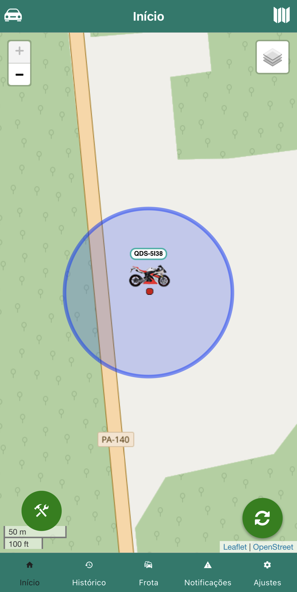

Auto Master Monitoramento
Descubra o futuro da gestão veicular com a Auto Master! Monitoramento 24h, redução de custos e segurança para você e sua empresa. Tecnologia avançada e intuitiva ao seu alcance.
Leia maisQuem somos?
Somos uma empresa especializada em monitoramento de veículos, tecnologia e segurança. Utilizamos tecnologia de ponta para oferecer rastreamento 24 horas por dia, proporcionando soluções logísticas e telemetria de alta qualidade aos nossos clientes. Com uma trajetória de confiança desde 2011, somos uma marca consolidada e contamos com mais de 2000 veículos rastreados em todo o Brasil. Na palma da sua mão, oferecemos a solução perfeita. Nossa equipe se dedica a proporcionar resultados positivos para sua empresa, sempre priorizando a qualidade e a satisfação do cliente. Conte conosco para simplificar sua gestão, impulsionar sua eficiência e garantir o sucesso do seu negócio.
Missão
Nosso objetivo é ser a referência em soluções tecnológicas, segurança e monitoramento via satélite (GPS) no mercado automotivo brasileiro. Oferecemos produtos de última geração, proporcionando controle e localização precisos de veículos e cargas com comunicação eficaz de dados. Impulsionamos o melhor desempenho logístico, resultando em redução de custos para o seu negócio. Conte conosco para agregar qualidade, segurança e eficiência à sua logística.
Nossa Visão
Nossa visão é ser a principal empresa de rastreamento, fornecendo soluções inovadoras e seguras que garantam o controle e a proteção de veículos, proporcionando tranquilidade e confiança aos nossos clientes

Estamos sempre empenhados em prestar o melhor aos clientes, seja na parte comercial ou no atendimento de emergência que funciona 24 horas.
Contamos com equipamentos de última geração, cuidadosamente selecionados, para assegurar um rastreamento de excelência. Nossa prioridade é fornecer a você um sistema confiável, preciso e de alta qualidade, que garanta a proteção e a localização precisa dos seus veículos.
Estamos sempre ao seu lado, oferecendo total suporte e agindo proativamente em situações de roubo. Nossa equipe assume a liderança das ocorrências, trabalhando incansavelmente para garantir a recuperação dos seus veículos e a sua tranquilidade. Conte conosco para estar um passo à frente quando você mais precisar.
Rastreador
O rastreador com a funcionalidade que você precisa e o preço que você procura! Compacto e baixo custo, o rastreador Auto Master é uma solução que se encaixa em qualquer frota, seja ela terrestre ou marítima. Além de acelerômetro e grau de proteção contra água(IP67), possui antenas GPS e GPRS internas, funções que tornam eficiente e extremamente funcional.
Cerca de Estacionamento
Introduzindo a Cerca de Estacionamento Inteligente: Proteção e Segurança para seu Veículo! Nossa cerca de estacionamento revolucionária garante a proteção do seu veículo. Com tecnologia avançada, monitoramos sua localização constantemente. Em caso de furto e o veículo saia da área delimitada, nosso sistema bloqueia o veículo e envia uma notificação para o seu aplicativo. Personalizável e fácil de usar, você controla tudo pelo seu celular. Tenha tranquilidade e proteja seu veículo, mesmo à distância.



Tecnologia.

Com o sistema de posicionamento global (GPS), seu veículo pode ser localizado em qualquer lugar do mundo, utilizando vários satélites em órbita ao redor do globo terrestre. Esses satélites fornecem informações precisas de latitude e longitude sobre a localização do veículo. O rastreador e bloqueador da Auto Master processa essas informações e as envia por meio da rede GSM/GPRS. Isso permite que você veja a localização dos seus veículos pela internet ou, quando solicitado, pela central de monitoramento. Você tem acesso à sua frota e pode monitorar seus veículos por meio de um computador, celular ou tablet.
Parceiros
Estabelecemos parcerias estratégicas com as principais empresas de tecnologia especializadas em segurança e monitoramento de veículos da América do Norte, Europa e Ásia. Nossas colaborações com esses renomados parceiros nos permitem oferecer soluções de ponta, desenvolvidas com as mais avançadas tecnologias disponíveis globalmente. Trabalhamos em conjunto com os líderes do setor para garantir a excelência em segurança e monitoramento para os nossos clientes.